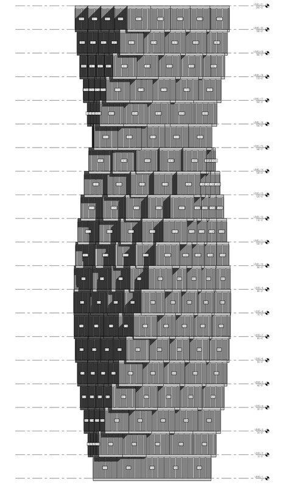
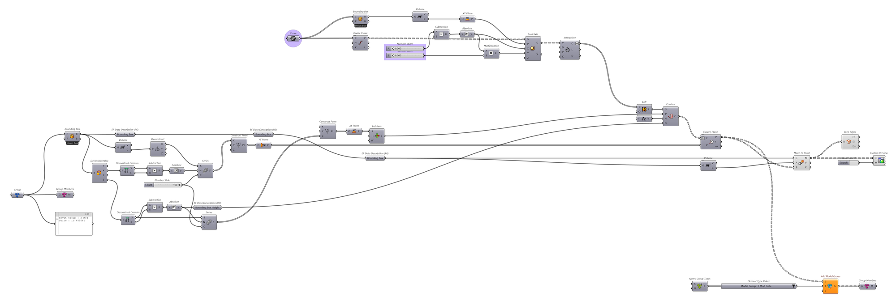

Dongwoo Suk
Computational Design Specialist
← → ↑ ↓ or click arrows to navigate
Education & Experience
Education
- M.Arch I — SCI-Arc (2018)
- BFA Interior Design — Pratt Institute (2015)
Certifications
- AIA Associate Member
- LEED Green Associate
- McNeel Grasshopper Level 1
- AI for Architects (ELVTR)
Experience
- Steinberg Hart (2022–Present)
Computational Design Specialist / ADG Lead
~10 members across 6 offices - The Code Solution (2019–2021)
Junior Designer - Oyler Wu Collaborative (2017, 2019)
Intern Designer — Design & fabrication for award-winning pavilion / exhibition
Awards & Technical Skills
Project Awards (8)
- PCBC Gold Nugget Grand Award — Best 55+ Community (Ellore)
- PCBC Gold Nugget Merit ×4 — Mixed-Use, Community, Multi-Family (Ellore + Clara)
- SHN Architecture & Design Award — Best Assisted Living, 1st Place (Ellore)
- SVBJ Structures Award — Market-Rate Residential (Clara)
- AIA California Firm Award — Highest Firm Honor (Steinberg Hart)
Career Awards (3)
- J. Irwin & Xenia S. Miller Prize — Winning Design, Exhibit Columbus (The Exchange)
- Mies Crown Hall Americas Prize (MCHAP) — Selected Project, IIT (The Exchange)
- IIDA NY Chapter Student Award — Interior Design (Pratt Institute)
Technical Skills
- Parametric: Rhino, Grasshopper
- BIM: Revit, Rhino.Inside.Revit, Dynamo
- Programming: Python, C#, GhPython
- AI: LLM Integration, RAG, Vector DB, Vision AI
- Full-Stack: Next.js, TypeScript, PostgreSQL
34+ Media Articles
- Fast Company, Architectural Record
- Dezeen, ArchDaily, NBC Bay Area
Grasshopper Python
Parametric Design Automation & Optimization Scripts
Grasshopper Python
Rhino 8 CPython Scripts for AEC Workflows
Projects
Building Massing Generator
Parametric Automation + Evolutionary Optimization

Facade Panelization Tool
Automated Panel Placement & Vector Analysis on Curved Facades
Parking Stall Tracker
Excel-Driven Parking Data Visualization in Rhino
Rhino.Inside.Revit
Bridging Parametric Design and BIM Documentation


Rhino.Inside.Revit Workflow
Bridging Parametric Design and BIM Documentation
- Rhino.Inside.Revit: Grasshopper runs natively inside Revit
- Real-time bidirectional sync between parametric design and BIM
- Full Revit API access from Grasshopper — no file exchange


Case Study: 5x5 Building
Full Building RIR Pipeline — Rhino to Revit
- GH Parametric Design to Seamless Revit Workflow
- GH Data Management for Revit BIM Data Conversion
- From Repetitive Modeling to Rapid Design Iteration

 Rhino
Revit
Rhino
Revit

5x5 Building: Parametric Design Modeling
Conceptual Massing Studies — Parametric Design Iterations
- Parameter-driven grid-based module box generation
- Floor-level-based extrusion
- Massing formation via module rotation
5x5 Building: Data Management
GH Data to BIM Management
- Beyond geometry: every module carries structured data (unit ID, type, parameters)
- Hidden back-end data drives both design and documentation
- Color coding + unit number tags visualize the underlying data structure


Design Option
GH Data Management
5x5 Building: Component Breakdown
Lossless GH → Revit Conversion via Rhino.Inside.Revit
- Clean, well-organized Grasshopper geometry data pipeline
- Sequential assembly: Floors → Cores → Structural Columns → Walls → Windows
- Zero data loss — parameters, types & categories fully preserved in Revit
5x5 Building: Revit Facade Development
Design Massing → Envelope → Panelization → Panel Patterns

5x5 Building: Documentation
BIM Documentation from Conceptual Design
- Automated floor plan details: interior walls, doors, unit room numbers
- Concept-to-documentation pipeline without manual re-drafting
- Component breakdown (Core / Corridor / Interior Walls) & elevation views



5x5 Building: Concept & Rendering
AI-Powered Visualization via Nano Banana
- Parametric massing output → AI rendering in minutes, not hours
- Rapid concept & mood exploration without traditional render setup


Case Study: Cal Poly Student Housing
Cal Poly — Largest Modular in U.S. (4,200 beds, $1.2B)
- Revit Model Group population via Rhino.Inside.Revit
- RIR workflow demonstration — not a project deliverable


Cal Poly: Parametric Box Displacement
Grasshopper Script for Modular Unit Placement
- GH-driven box module placement on curved grid
- Parametric shift & offset per unit

Cal Poly: Documentation Views
Revit Documentation from Rhino.Inside.Revit Pipeline


Case Study: Adaptive Curtain Wall
Parametric Facade Panel System — RIR to Revit
- Revit adaptive component panels
- Grasshopper parametric control via Rhino.Inside.Revit
- Sun-analysis-driven panel type variation


Adaptive Curtain Wall: Parametric Panel Control
Color-coded Panel Visualization — Distance-Driven Pattern
- Panel geometry parametrically driven by attractor distance
- Color-coded panel visualization driven by distance data


Adaptive Curtain Wall: Sun Hour Analysis
Sun Hour Analysis → Revit Family Parameters
- Per-panel sun exposure data from reference attractor
- Panel form driven by sun exposure across facade
- Data reflected in Revit family parameters via Rhino.Inside.Revit

Adaptive Curtain Wall: Revit Documentation
Automated Axon, Plan & Elevation from Parametric Model


Case Study: Frit Pattern Design
Parametric Facade Pattern — Concept to Fabrication
- Final design review items during the CD Phase
- Grasshopper-driven pattern generation
- Revit documentation for fabrication


Frit Pattern: Concept References
Morse-Code-Embedded Pattern Studies


Frit Pattern: Parametric Generation
Grasshopper-Based Pattern Logic on Facade Geometry
Frit Pattern: Revit Documentation
Elevation & Details for Fabrication
- Automated elevation output
- Filtering panel types to apply the pattern via RIR
- Shop-drawing-ready from parametric model


Open-Source Development
AEC Tools & AI-Powered Applications
Projects

Reticle
Grasshopper Plugin — Center-Based Division for Curves & Surfaces

Divide Centered: Why?
Default GH Components vs Reticle
Problem: Default Components

Divide Curve
- Count-based — no dimensional control
- Not suitable when exact spacing is required (architectural dimensions)
- Multiple curves → each gets different segment sizes
Divide Distance / Length
- Always start from one end → asymmetric remainder at far end
- Cumulative error on curved geometry
- Similar results despite different calculation methods
Solution: Divide Centered

- Divides from center outward
- Symmetric remainders on both ends
- Exact distance-based spacing across any curve length
- Consistent segments across multiple curves
- Toggle for including/excluding endpoints
Divide Centered: Demo
Center-based curve division in action
Divide Surface Centered: Why?
Default GH Components vs Reticle
Problem: Default Components

Divide Surface / Isotrim
- Count-based (U/V count) — no distance control
- No full control of output sub-surfaces in equal size when input surfaces are different sizes
- No equal spacing on curvature surfaces
As a result ↓
- Requires multi-component workaround to get measurable outcomes
- Complex data tree management
Solution: Divide Surface Centered

- UV center-based division
- Symmetric remainders on all edges
- Sub-Surfaces output (ready for paneling)
- U/V Remainder values as output
- Independent endpoint toggles (Eu, Ev)
- Single component replaces multi-step workflow
Divide Surface Centered: Demo
Center-based surface division in action
Rhino Grasshopper MCP
AI-Powered Design Assistant with ML Auto-Layout
Design Intelligence Platform
Cloud Design Data Infrastructure + Optimization Engine
AEC Outlook MCP
AEC-Specialized Email Intelligence with Vision AI
Grasshopper Quality Analyzer
Automated Code Quality for Computational Design
LEED AP Study Application
AI-Powered Exam Preparation Platform